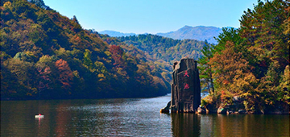

来到陌生的长职校园，你们有勇气来一场说走就走的旅行吗？学姐学长告诉你们，有了长职app就可以这么任性！
一：免费游
1、湖北省博物馆
湖北省博物馆筹建于1953年，位于武汉市东湖风景区，国家4A级景区。是全国八家中央地方共建的国家级博物馆之一，是湖北省唯一的省级综合性博物馆，也是全省最重要的文物收藏、研究和展示机构。现总占地面积达81909平方米，其中一级文物近千件（套），有中国规模最大的古乐器陈列馆。建筑具浓郁楚风，呈一主两翼、中轴对称。馆舍由编钟馆、楚文化馆、综合陈列楼组成。
线路：乘810路公交到【省博物馆】站下；或乘715路公交到广埠坉转705路公交到【省博物馆】站下；或乘583路公交到吴家湾转709路公交到【省博物馆】站下；或乘轨道交通二号线转四号线在【东亭】站下沿黄鹂路步行900米即到
详情： 湖北省博物馆
2、武汉市长江大桥
武汉长江大桥，是长江上修建的第一座桥梁，也是武汉的地标性建筑。大桥横跨于武昌蛇山和汉阳龟山之间，桥的两端建有民族风格的桥头堡。大桥分为两层，上层是公路，两旁有人行道；下层是铁路。大桥南、北桥头堡下分别是武昌江滩和汉阳江滩，武昌江滩附近有黄鹤楼、辛亥革命博物馆、户部巷等景点；汉阳江滩附近有龟山公园和晴川阁等景点。 你从武昌的黄鹤楼附近和汉阳的龟山公园南门附近，通过引桥走上桥面过江，全程耗时约50分钟；或者在大桥南、北两个桥头堡下，乘坐电梯（电梯收费）到达桥面后，再步行过江，全程耗时约30分钟。 游览长江大桥，可以和桥头堡附近的景点一并游玩，步行走过大桥，在桥面上可以遥看武汉三镇的风光。
线路：乘728公交（民族大道上钱村）到【武昌阅马场】站下步行至长江大桥；乘529公交（雄楚大道民族大道口）到【民族路司门口】站下步行至长江大桥
详情： 长江大桥
3、长职附近的大学
我们长职地处美丽的南湖之滨、”武汉、中国光谷”核心地段，交通便利，周围高校林立，周末相约三五个同伴到其他学校逛一逛也是不错的选择。例如像中南民族大学、武汉纺织大学、中南财经政法大学、华中农业大学、华中师范大学、华中科技大学等一系列大学。
二、自助游
1、武汉欢乐谷
武汉欢乐谷位于武汉市洪山区欢乐大道，占地面积达35万平方米，是全国第5个、华中唯一一个华侨城·欢乐谷主题乐园。其由欢乐江城、飓风湾、梦想大道、极速世界、渔光岛、卡通工厂、欢乐时光、羽落天堂等八大主题区域组成。主要项目有木翼双龙、凤舞九天、激流勇进等。
线路：乘810公交（民族大道上前村）到【欢乐谷大道欢乐谷站】下；
门票：180元
详情： 武汉欢乐谷
2、东湖风景区
东湖风景区位于武汉中心城区，是国家AAAAA级旅游景区，全国文明风景旅游区示范点，中国首批国家重点风景名胜区，是以大型自然湖泊为核心，湖光山色为特色，集旅游观光、休闲度假、科普教育为主要功能的旅游景区，在中国的历史文化和风景名胜中具有重要地位，每年接待游客达数百万人次，是华中地区最大的风景游览地，也是中国最大的城中湖。
线路：乘坐22路公交车可直达东湖风景区。
门票：东湖年票：50.00元 磨山景区：60.00元 落雁景区：10.00元 听涛景区免费 马鞍山城市森林保护区：10.00元
详情：东湖风景区
3、木兰天池
木兰天池位于武汉市黄陂区，景区面积13平方公里，中国著名的国家级森林公园，国家AAAA级风景区，主要由“浪漫山水”、“高峡人家”和“森林公园”三大主题景园链接成一个南北走向，长达十余公里的森林山水大峡谷。整个景区占地面积4800亩，分为风景游览区和休闲度假区。其主峰海拔520.6公尺，属大别山南麓一脉，这里沟壑纵横，林木茂盛，一年四季流水不断，呈现的是一种山水交融的湿地生态。木兰天池拥有丰富的森林资源和良好的生态环境，是游客进行森林沐浴的最佳去处。
线路：从汉口新华路、竹叶山乘专线巴士可直达黄陂木兰天池；汉口火车站乘公交292到黄陂客运站转乘专线巴士可到达木兰天池；
门票：成人票80元、学生凭学生证半价 不过在网上订购会更加便宜哦
详情： 木兰天池
